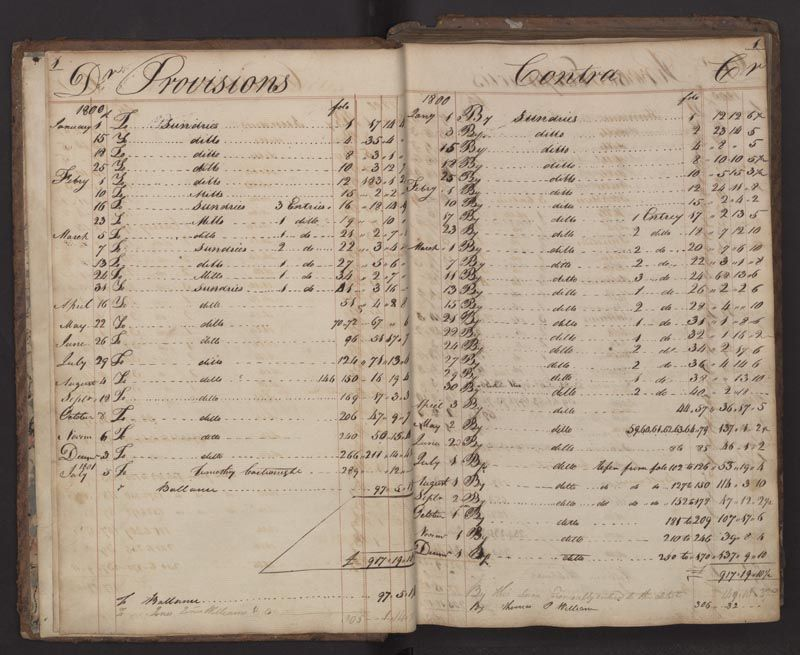

Parish registers
Series 1 of 6 · MRO/PAR
1538–1931 · 14.2 m · Strongroom A
ReferenceMRO/PAR
Dates1538–1931
Length on the shelf14.2 m
StoreStrongroom A
Items listed12, 0 closed
Order now, in the reading room11:40
Baptisms, marriages and burials for Marrowby St Wilfrid and its two chapels, Fellgate and Ousewick. Bishop’s transcripts fill the gap from 1643 to 1660, when the St Wilfrid volume was not kept.
| Reference | Title | Dates | Extent | Access | Slip |
|---|---|---|---|---|---|
| MRO/PAR/001 | St Wilfrid baptisms, marriages and burials | 1538–1642 | 1 vol | Open · no copies | |
| MRO/PAR/002 | Bishop’s transcripts, Marrowby deanery | 1643–1660 | 1 bundle | Open | |
| MRO/PAR/003 | St Wilfrid baptisms, marriages and burials | 1661–1748 | 1 vol | Open · no copies | |
| MRO/PAR/007 | St Wilfrid marriages and banns | 1754–1812 | 2 vols | Open | |
| MRO/PAR/012 | St Wilfrid baptisms | 1813–1871 | 1 vol | Open | |
| MRO/PAR/013 | St Wilfrid burials | 1813–1894 | 1 vol | Open | |
| MRO/PAR/021 | Fellgate chapel baptisms | 1790–1902 | 1 vol | Open | |
| MRO/PAR/022 | Fellgate chapel burials | 1792–1888 | 1 vol | Open | |
| MRO/PAR/030 | Ousewick chapel baptisms and burials | 1801–1910 | 1 vol | Open | |
| MRO/PAR/041 | Churchwardens’ accounts | 1612–1871 | 3 vols | Open | |
| MRO/PAR/044 | Vestry minutes | 1789–1894 | 2 vols | Open | |
| MRO/PAR/052 | Faculty papers and seating plans | 1704–1931 | 1 box | Open |
Registers before 1813 are shown on film first. Ask at the desk if a film entry cannot be read; the volume is then fetched with the next pull.
Closed itemsNone
Fragile, no copiesMRO/PAR/001
MRO/PAR/003
MRO/PAR/003
